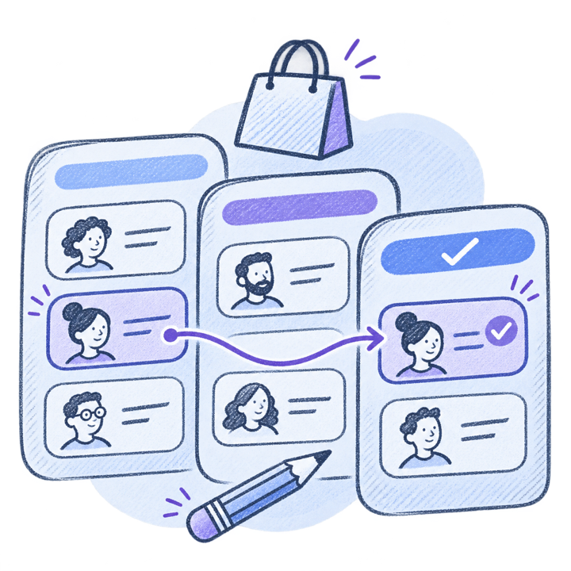
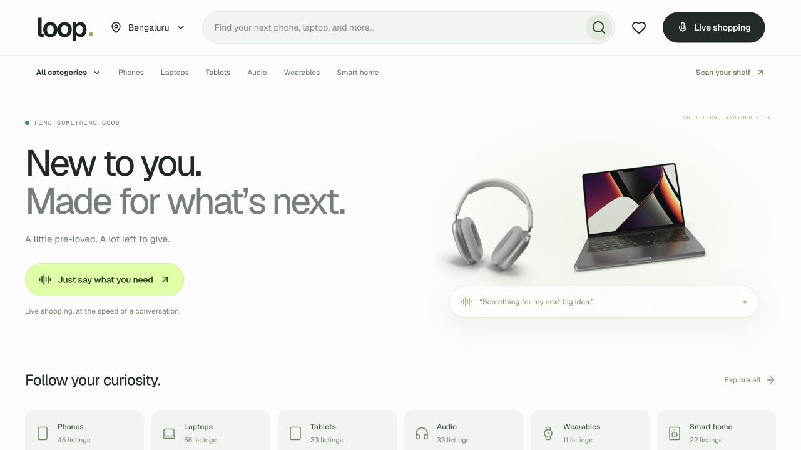

Has anybody already built a CRM for tracking leads on an e-commerce system?

HOW IT WORKS
All projects

5 screens · 1 videoVoice-first e-commerce shopping
Search, ask about products and shortlist them in one continuous voice conversation.
 1 video
1 videoAgents in investment management
A video walkthrough of an investment platform with agents at its core.
 1 screen · 1 video
1 screen · 1 videoVoice-based analytics: an analyst on the call
Ask a question out loud and the evidence appears while the conversation is still happening.
 4 screens
4 screensProactive analytics: insights without asking
Benchmarks, data-hygiene checks and a daily brief instead of another dashboard.
 4 screens
4 screensSeller onboarding experience
Getting a new marketplace seller to their first sale: one step at a time, with help exactly where they get stuck.
 1 screen
1 screenThe changing face of CRM
What a CRM competes on once anyone can rebuild the workflow in a weekend.
 2 screens
2 screensA Slack teammate for product and analytics teams
Turning each expert’s personal skills into a shared assistant everyone can use.
 13 screens
13 screensDelightful seller experiences in an agentic world
A three-part series on agents for marketplace sellers — cohorts, workflows and why chat isn’t the strategy.
 5 screens
5 screensSoftware that consults: context as the new moat
When software is cheap to build, depth of context, owning the workflow and delivering outcomes become the moat.
 14 screens
14 screensAI product teardown: Asana as an OS for human–agent teams
Concepts for how Asana could look if it were built today, with fictional project data.
 10 screens
10 screensTodoist as a true non-technical agent
Ideas for how Todoist could lead in an agent-first world without overwhelming its users.
 11 screens
11 screensAgentic customer experiences for travel
Earning the next booking by making this trip easier.
 3 screens
3 screensThe forks in the road for assistants
Where personal agents are heading, illustrated with Hermes prototypes.
 5 videos
5 videosAnimated shorts on building
A series of short animations about ideas, incubation and luck.
Has anybody already built it?
Has anybody already built a shop you can just talk to?
Yes. Search, ask about products and shortlist them in one continuous voice conversation. Let people ramble about what they need: budget, use, compromises. A live voice model listens and speaks at the same time, while the screen shows matching products, details, sample reviews and a growing shortlist. See the project.
Has anybody already built agents built into an online investment platform?
Yes. A video walkthrough of an investment platform with agents at its core. Treat the agent as an application that senses, thinks and acts, reasoning through many steps the way a person would, built into the core of the experience. See the project.
Has anybody already built an analyst that answers while you’re still on the call?
Yes. Ask a question out loud and the evidence appears while the conversation is still happening. Meridian listens for the question and makes the answer the main thing on screen: one big number, a trend or a table. Follow-ups reuse the current metric and dates, so the discussion keeps moving. See the project.
Has anybody already built analytics that tell you what changed before you ask?
Yes. Benchmarks, data-hygiene checks and a daily brief instead of another dashboard. Package domain knowledge into a thin agent harness: benchmark against comparable businesses, flag the data-hygiene gaps that block better decisions, learn what normal looks like and surface only meaningful deviations each morning, and build a shared company brain in Slack and MCP. See the project.
Has anybody already built a conversational-based onboarding experience?
Yes. Getting a new marketplace seller to their first sale: one step at a time, with help exactly where they get stuck. Focus on one thing at a time and hide the rest. Import what the user already has — a catalog on their site, documents in a Drive folder — and let agents cross-check it. Put help inline exactly where they get stuck, answer the broader “how long will this take?” questions, and make mistakes easy to fix. See the project.
Has anybody already built a CRM for tracking leads on an e-commerce system?
Yes. What a CRM competes on once anyone can rebuild the workflow in a weekend. Treat MCP as table stakes so customers can drive the CRM from their own agents, then go beyond the named lead: help with acquisition before a contact exists, bring industry intelligence and reach that a self-built workflow can’t, and stay the source of record for outcomes. See the project.
Has anybody already built a Slack teammate that learns from the whole team?
Yes. Turning each expert’s personal skills into a shared assistant everyone can use. Build a departmental harness: capture each expert’s workflows as shared memory without asking them to save anything, make those workflows discoverable when someone asks a related question, and run them in Slack where the team already works. See the project.
Has anybody already built an agent that runs the seller side of a marketplace?
Yes. A three-part series on agents for marketplace sellers — cohorts, workflows and why chat isn’t the strategy. Pick seller work that spans many functions and departments, understand each cohort’s habits and what they care about, then decide per action whether to ask in chat, show it visually, or simply do it and explain afterwards. See the project.
Has anybody already built software that consults instead of just executing?
Yes. When software is cheap to build, depth of context, owning the workflow and delivering outcomes become the moat. Write the business down so an agent can act on it — goals, ground principles, customers, constraints — in simple files the harness reads before it understands, acts and checks. See the project.
Has anybody already built an AI-native work manager for humans and agents?
Yes. Concepts for how Asana could look if it were built today, with fictional project data. Bring work management to where the information already is: work from inside Claude or Codex via MCP, capture decisions from meetings and email, and let agents operate autonomously on the right tasks — without overwhelming existing users. See the project.
Has anybody already built a to-do app that becomes an agent for everyday people?
Yes. Ideas for how Todoist could lead in an agent-first world without overwhelming its users. Start with cohorts — the productivity guru, the backlog collector, the family COO, the workflow architect — and design how each plans their day and week, then let the agent act on the list. See the project.
Has anybody already built an agent that plans the whole trip, not just the booking?
Yes. Earning the next booking by making this trip easier. Treat a trip as a chain of decisions. Learn the combination of likes and dislikes for this trip, remember where someone has been and how they feel about going back, carry each choice into the next stage, and reach them on the right channel at the right moment. See the project.
Has anybody already built a personal assistant that keeps up across mobile and desktop?
Yes. Where personal agents are heading, illustrated with Hermes prototypes. Win on mobile, design for calm rather than stress, solve continuity with summaries and decision points, treat roles as shared context instead of separate bots, and make real-time voice the default input. See the project.
What is Knowhow?
Knowhow is a library of AI product case studies, prototypes and teardowns. Each one explains the question, the approach, the tradeoff and the lesson, with every screen and video, so you can learn from work that already exists and reach the builder for your own project.
How do I reach the person behind a project?
Use “Share your specific need” on any project. It goes to aditya@decisionos.me.
Can I ask about something that isn’t listed?
Yes. Share your specific need from the homepage and describe what you want to build and where you are stuck.
The most valuable part of a project
isn’t just what got built.
It’s why someone built it that way.